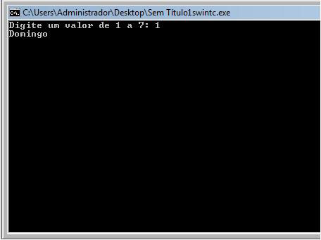

Chamamos de estruturas de decisão encadeadas, quando uma estrutura de decisão está localizada dentro do lado falso da outra. Este tipo de estrutura também é conhecida como seleção “aninhada” ou seleção “encaixada”.
Qualquer que seja o termo usado para identificar a estrutura, o importante é que esse formato com uma estrutura de seleção dentro da outra permite fazer a escolha de apenas um entre vários comandos possíveis.
Vejamos um exemplo em pseudocódigo.
Exemplo:
Receber os valores inteiros e verificar qual dos valores é o maior. Emitir uma mensagem caso o valores sejam iguais.
Algoritmo MaiorNumero;
Var
int N1, N2 ;
Inicio
Escreva("Digite o primeiro número: ");
Leia(N1);
Escreva("Digite o segundo número: ");
Leia(N2);
Se (N1 == N2) então
Escreva ("Os números são iguais”);
Senão
Se (N1 > N2) então
Escreva("O maior valor é = ",N1);
Senão
Escreva("O maior valor é = ",N2);
Fim.
Em linguagem C podemos usar estruturas if – else -if encadeadas para construir o código equivalente.
#include <'stdio.h> // tire as aspas simples para funcionar
#include <'stdlib.h> // tire as aspas simples para funcionar
int main (void)
{
int N1, N2 ;
printf("Digite o primeiro numero: ");
scanf("%d", &N1);
printf("Digite o segundo numero: ");
scanf("%d", &N2);
if (N1 == N2)
printf("Os numeros sao iguais!");
else if (N1 > N2)
printf("O maior valor e = %d", N1);
else
printf("O maior valor e = %d", N2);
printf("\n");
system("pause");
return (0);
}
Tela de execução

É uma forma de reduzir a complexidade de vários if … else encadeados.
É muito utilizado, principalmente para uso em estruturas de menu.
O conteúdo de uma variável é comparado com um valor constante, e caso a comparação seja verdadeira, um determinado comando é executado.
Pseudocódigo:
Em português estruturado o comando escolha…caso equivale ao switch…case
Veja estrutura escolha … caso
Escolha (Variável)
Inicio
Caso (Valor1):
Instruções;
Caso (Valor2):
Instruções;
Caso (ValorN):
Instruções;
Fim;
Sintaxe do comando switch case em linguagem C
switch (variável)
{
case constante1:
Instruções;
break;
case constante2:
Instruções;
break;
default
Instruções;
}
Utilização
Vamos construir um programa para verificar o dia da semana a fim de exemplificar a utilização do switch…case.
O usuário vai digitar um número e o programa vai retornar o dia da semana equivalente ao número.
Exemplo:
#include <'stdio.h> // tire as aspas simples para funcionar
#include <'conio.h> // tire as aspas simples para funcionar
int main (void )
{
int valor;
printf ("Digite um valor de 1 a 7: ");
scanf("%d", &valor);
switch ( valor )
{
case 1 :
printf ("Domingo\n");
break;
case 2 :
printf ("Segunda\n");
break;
case 3 :
printf ("Terça\n");
break;
case 4 :
printf ("Quarta\n");
break;
case 5 :
printf ("Quinta\n");
break;
case 6 :
printf ("Sexta\n");
break;
case 7 :
printf ("Sabado\n");
break;
default :
printf ("Valor invalido!\n");
}
getch();
return 0;
}
Tela de execução
Explicação do código:
A instrução break termina a execução do switch e o programa continua a executar na instrução seguinte.
O uso do break evita testar as demais alternativas de forma desnecessária quando uma opção verdadeira já foi encontrada.
O comando default exibe uma mensagem, caso nenhuma das alternativas anteriores seja verdadeira. Agora veja, como ficaria o mesmo programa usando comandos if else aninhados (encadeados).
#include <'stdio.h> // tire as aspas simples para funcionar
#include <'conio.h> // tire as aspas simples para funcionar
int main (void )
{
int valor;
printf ("Digite um valor de 1 a 7: ");
scanf("%d", &valor);
if (valor == 1)
printf ("Domingo\n");
else
if (valor == 2)
printf ("Segunda\n");
else
if (valor == 3)
printf ("Terça\n");
else
if (valor == 4)
printf ("Quarta\n");
else
if (valor == 5)
printf ("Quinta\n");
else
if (valor == 6)
printf ("Sexta\n");
else
if (valor == 7)
printf ("Sabado\n");
else
printf ("Valor invalido!\n");
getch();
return 0;
}
Importante:
Não são aceitas expressões condicionais no comando switch…case, somente são aceitos valores constantes.
Esta é um diferença bem grande quando comparado ao comando if…else.
Portanto caso tenha que testar uma condição você terá que usar if…else ao invés do switch…case.
Esta instrução é usada quando não sabemos quantas vezes um determinado bloco de instruções precisa ser repetido. Com ele, a execução das instruções vai continuar até que uma condição seja verdadeira. A condição a ser analisada para a execução do laço de repetição deverá retornar um valor booleano.
Veja abaixo a sintaxe do while:
while (teste condicional)
{
//comandos; > serão executados enquanto
o teste condicional for igual a verdadeiro (true)
}
Perceba que, somente se a condição for verdadeira o corpo do laço de repetição, com seus respectivos comandos, serão executados. Portanto, o conteúdo será repetido até que esta condição não seja mais verdadeira.
Veja agora um exemplo prático com o while:
decimal salario = 1000;
while (salario < 5000)
{
salario *= 100;
Console.WriteLine("Meu salário AINDA é de = " + salario);
}
Devemos saber que o laço de repetição while pode não ser executado. Isso pode ocorrer quando, na primeira verificação da condição, ela for falsa. Neste cenário, o programa simplesmente irá “pular” para a execução da próxima instrução após o laço.
O do/while tem quase o mesmo funcionamento que o while, a diferença é que com o uso dele teremos os comandos executados ao menos uma única vez.
Veja abaixo a sintaxe do do/while:
do
{
//comandos;
} while (condicao);
Agora vejam dois exemplos práticos usando do/while:
do
{
Console.WriteLine("Dentro do loop");
} while (false);
decimal aumento = 250;
do{
Console.WriteLine("O valor atual do aumento é de: " + aumento);
aumento += 50;
} while (aumento < 500);
Nesse último exemplo, faço uma verificação dos valores aumentados e, a cada “passada” do laço, incremento em 50 o valor do aumento.
O resultado em tela deste exemplo é o seguinte:
For ele é um laço de repetição que pode ser usadode muitas formas, como já diz laço de repetição, repete quantas vezes for necessário, ou se o usuário pedir!. Neste exemplo é diferente ele termina direto.
#include <'stdio.h> // tire as aspas simples para funcionar
#include <'stdlib.h> // tire as aspas simples para funcionar
#include <'locale.h> // tire as aspas simples para funcionar
#include <'stdbool.h> // tire as aspas simples para funcionar
void main()
{
int inicial,fina;
setlocale(LC_ALL, "");
printf("digite um número inicial:");
scanf("%d", &inicial);
printf("digite um número final:");
scanf("%d", &fina);
for(inicial; inicial<= fina; inicial++){
printf("\n %d\n ", inicial);
}
}
Neste exemplo você informa o número inicial e o final, ele far laço e mostrar intervalo os outros números
O resultado em tela deste exemplo é o seguinte: